Network and MITM attacks
Getting up to date
Alright now it's time to talk about what most people are interested which is how to launch
M
an
I
n
T
he
M
iddle (MITM) attacks against individuals to either infect them with malware, capture their login credentials, or to sniff local network traffic. If you're not familiar with what a MITM attack is I suggest doing a brief Google search to get a full understanding of what it is. While you're at it you should also have a general understanding of what phishing is as well. I don't plan on going into a lot of detail about phishing as that's going to be a whole course (ACT V) on its own so if you don't know what MITM or phishing is then take a moment to search Google or YouTube. Don't worry about the technicalities of how to launch the attacks, as I'll teach you that, but simply get a basic understanding of what these attacks are about.
This course is more geared towards for when you're on a home network, coffeeshop, or other small business Wi-Fi network and wanting to infect others with malware.
In a brief summary a MITM attack is when you're able to re-route network traffic through your computer before it leaves onto the internet and back again without people on the network knowing anything malicious is happening, for the most part. You can add, delete, and inject data among other things coming and going to a specific target or the whole network. You'll be able to perform a MITM on a Wi-Fi network whereas governments, nation states, etc. perform MITM on a much greater scale across the internets, routers, ISP, etc. The cyber world is getting a little bananas these days no?
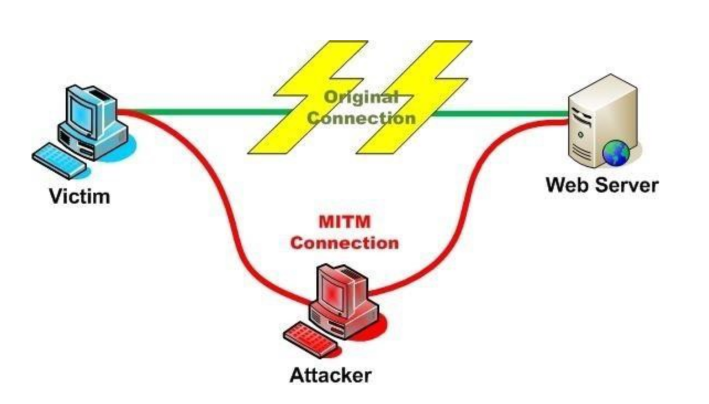
Before we go into any details we need to educate ourselves on the current state of MITM attacks, the limitations of them, obvious problems, and get you up to speed so you're able to launch sophisticated attacks against other people connected to the network. Since most modern protocols send data over the network encrypted we'll focus on the most commonly used network protocols an "average" user would be using and that's HTTP/HTTPS. We know this because most people sitting at the coffee shop or on their work computers are usually browsing the internet. It's best to attempt to compromise individual(s) on the network through these types of MITM attacks. The first basic piece of information we need to know about is what are the HTTP, HTTPS, and HSTS protocols. How do they impact the success or failure of a MITM attack? Let's do a quick overview comrades.
HTTP
H
yper
t
ext
T
ransfer
P
rotocol (HTTP) is a stateless protocol used to communicate between clients and hosts on the internets. When you use your web browser (FireFox, Google Chrome, Microsoft Edge, Safari, IE6, etc.) and connect to a website it will use this protocol to fetch the resources, such as HTML documents, make the connection to the website, and obtain the data to be rendered in your web browser. Since it's a stateless protocol when you go from web page to web page the web server has no idea who or what you are which is why web applications use cookies, sessions, IDs, etc. which are added to the HTTP request. This is important because you need those so you're able to login to a website, navigate around the website, which in turn gives the web application the items needed to display the proper content for your account.
HTTP is all in plain text, can be intercepted while on a network, and read like a book with no difficulty as nothing is encrypted. If a user logs into their company web email portal using HTTP and you're on the same network performing a MITM attack, or just sniffing the network traffic, you would be able to see their web email login credentials sent over the wire (network) in plaintext. Now that you have the email login credentials you could then login to that email account and send dick picks to all their co-workers you crazy fuck.
OR
You could login to the email account to see how the organization operates internally and determine if you're able to monetize it in any way (BEC scams anyone?). What kind of email do you have access to? What level of employee is this email linked to in the organization? Can you leverage this email account to send out malware to the company? The reality is that's not going to happen because HTTP plaintext credential stealing fun bongonza is over and most, if not all, modern web applications have at minimal HTTPS enabled which prevents you from sniffing any traffic that isn't encrypted.
HTTPS
H
yper
T
ext
T
ransport
P
rotocol
S
ecure (HTTPS) is the same as HTTP but it's encrypted and cannot be "sniffed" like HTTP. It's the gold standard these days when it comes to web applications and websites. It wraps an encrypted layer around the HTTP content by using
T
ransport
L
ayer
S
ecurity (TLS) and encrypts your information being sent over the network to its destination making it secure. Encrypting your data prevents hackers from sniffing your network traffic and stealing your data. Most modern bank websites all use HTTPS and do not allow HTTP connections to ensure their clients can't have their credentials compromised when trying to access their bank accounts online. The classic sign of a HTTPS website is the green padlock to the left of the URL/website name in your browser while visiting that specific website.
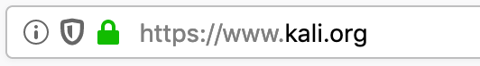
I'm not going to go into much further details on HTTP and HTTPS because this is too basic and you can Google that shit without me re-inventing the wheel when it comes to explaining it. If you want a brief summary invest (5) minutes into learning more about it.
Click to Read - HTTP and HTTPS
What I want you to take away from it all is HTTP sends data over the Wi-Fi network/internet in plain text, can be intercepted, and HTTP doesn't have anything to do with encryption. Whereas HTTPS data is encrypted, cannot be intercepted, and uses public key encryption to ensure your data is encrypted over the network.
In general HTTPS websites have TLS/SSL certificates and check to ensure that the certificate is valid for that website which cannot be spoofed, faked, or intercepted without the web browser displaying errors. If the certificate is not valid or being spoofed it's very unlikely your web browser will allow you to connect to that website directly. The web browser will display errors to the users warning something is not right. There are checks and balances in place to ensure HTTPS is safe and secure for it's end users.
However, on January 15, 2020 the National Security Agency (NSA) released information about a CryptoAPI vulnerability (CVE-2020-0601) for Windows 10 which allows attackers, like you, to spoof the root certificate on Windows 10 computers. Basically TL:DR this means attackers can now spoof certificates which appear to be legitimate on Windows 10 thus the users will not be displayed any warnings since the certificate being spoofed actually appears legitimate. Well holy fuck! The newest patch on Windows 10 has fixed this vulnerability but again not everyone is a patch master and updates their shit. You should be aiming to get to a skill level that when these such vulnerabilities are released you can pounce on the opportunity and go around causing fucking mayhem and profit until your tits fall off. I recommend aiming for this level of hacker level.
Moving along...
In regards to HTTPS and encryption certificates are issued by Certificate Authorities (CA) which ensure your data is being encrypted from your machine to the website and act as an authority organization when it comes to issuing, checking, and validating certificates. Without a proper certificate your browser will display numerous warnings telling you an attacker might be trying to steal your data over the network. Remember, you can tell you're on a HTTPS website because you'll see a green lock beside the URL indicating HTTPS/TLS is in place. If we click on the green lock you're presented with information about the certificate and if you wanted to you could further check what CA has issued it.
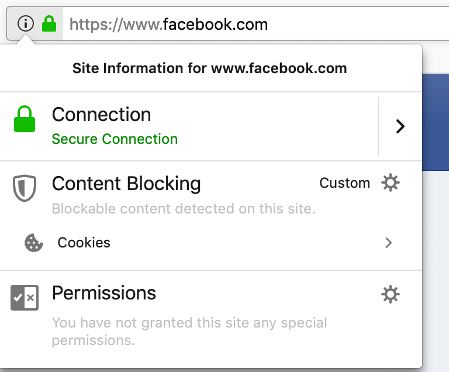
HTTP
is not secure, unencrypted, and we can steal the data over the network.
HTTPS
is secure' encrypted, and we'll have difficulty stealing the data over the network without the user being warned about the possibility of an attack against them. If you remember anything remember that.
Next, something relatively new to the "modern web" that impacts MITM attacks we'll spend some time on learning about is called
H
TTP
S
trict
T
ransport
S
ecurity (HSTS).
HSTS
H
TTP
S
trict
T
ransport
S
ecurity (HSTS) was designed to protect websites from being "downgraded" from using HTTPS to HTTP. HSTS forces everyone who's trying to view the website over HTTP to be re-directed to the HTTPS version of that specific website. This forces the users visiting that website to automatically upgrade their connection over HTTPS unknowingly securing them and encrypting their data over the network. MITM attacks attempt to "downgrade" HTTPS to HTTP thus forcing all communications to be in clear text which can be intercepted over the network.
An example of what type of MITM attack HSTS interferes with would be when someone is trying to connect to their banking website at https://www.bank.com. Since we know HTTPS is secure and the information is encrypted over the network we'll need to somehow trick people to view the bank website over HTTP. You' the attacker, are performing MITM attacks on the network and redirecting any requests going to
https
://www.bank.com to
http
://www.bank.com in hopes you'll sniff and obtain their login credentials to login to their bank account at a later time. In fact, this is exactly one of many scenarios why an attacker would launch a MITM attack against targets on the network (phishing can obviously be used here but that is a guide on it's own). HSTS enabled websites (all the popular ones) prevent this type of attack from occuring. So that means re-directing the targets to any website that has HSTS enabled is not going to be possible which is the case for any major banking institution, post-secondary institution, Facebook, IG, etc.
How do HSTS enabled websites prevent MITM attacks from "downgrading" people over the network from HTTPS to HTTP? I'm glad you asked. Every modern web browser comes pre-configured with a HSTS file in the browser itself. This HSTS file is managed by Google and does not allow such attacks to occur against the pre-configured web sites in the HSTS file. An organization/company can apply for HSTS to their website and be added to the pre-configured list for each browser at:
https://hstspreload.org
If you'd like to see what websites are in the HSTS file go to the link below. The HSTS pre-configured file is managed by Google and is constantly being added to.
https://chromium.googlesource.com/chromium/src/+/master/net/http/transport_security_state_static.pwson
HSTS is an enhancement of the HTTPS protocol that was designed to mitigate the weaknesses exploited by tools such as SSLStrip used during a MITM attack. When a HTTP client requests a resource from an HSTS enabled web server the web server adds the following header to the response:
Strict-Transport-Security: max-age=31536000
This header tells the browser that it should always request content from the website over HTTPS. Remember, most modern browsers maintain a list of websites that should always be treated this way (the HSTS file). It's also important to note that when the web browser receives a HSTS header from a server it adds the servers domain to the HSTS file. The HSTS file is constantly being updated and added to. So that means as soon as you go to https://www.BIGWEBSITE.com and their server responds with a HSTS header that website is now in the HSTS file.
Once in the HSTS file if a user attempts to access
http
://www.BIGWEBSITE.com instead of
https
://www.BIGWEBSITE.com the browser first checks if the domain is in the HSTS file and if that domain is found in the HSTS file then the browser will automatically request the resource over HTTPS preventing anything else from happening. Important to note that the HSTS also maintains the list of proper certificates for the domains within it so you're unable to "spoof" anything HSTS related.
To see HSTS in action simply type
http
://www.facebook.com into the URL field of your browser and hit enter. You'll notice that automatically the request is converted to
https
://www.facebook.com. Your browser detects the
HTTP
request, checks it against the pre-configured HSTS file' and redirects your request to
HTTPS
for you thus not allowing any http request to that specific website. HSTS prevents anyone from visiting a HSTS website with HTTP thus preventing the users from sending their data over the network/internet in plain text.
HSTS enabled websites are a major pain in the ass from an attacker's perspective because all major websites have this shit enabled. MITM attacks are still a viable option when attacking people on the network but there's no way around the HSTS websites that are listed in that pre-configured file at the current moment. So you're not intercepting anything that has to do with anything HSTS related. This is reality.
Let's get into the MITM problems first so you're right up to speed with current MITM attacks being used in the wild today and what's actually possible for you in today's day and age.
For this example we're going to use https://www.facebook.com as this is a common website for most people and we know that Facebook is in the HSTS pre-configured file of every browser. For now I won't go into the syntax for the attacks because I want you to understand why this is a fuck shit piss problem for attackers such as ourselves. I'll use FireFox, Safari, and Google Chrome to demonstrate why HSTS and HTTPS MITM attacks are a problem and that all modern day web browsers will display some sort of warning to the user being attacked preventing you from compromising them or obtaining their login credentials.
OK here we go comrades.
So for now picture I'm on a network launching my MITM attacks against another computer on the network. In my attack I'm "downgrading" any HTTPS request to
https
://www.facebook.com and forcing the victim to make a HTTP request to
http
://www.facebook.com instead. Again, we're launching this type of attack because we know HTTP is insecure and we want to force the victim to send their credentials unencrypted so we're able to capture them while on the network. Hopefully you understand the importance of this by now. You'll see what's displayed when dealing with a HSTS website and if you're able to connect to that website while performing MITM attacks.
Remember, I'm already performing a MITM attack (you're learn this soon enough) on the network and re-directing everyone trying to visit https://www.facebook.com.
For simplicity I've already clicked through the warnings displayed to the user under the "Advanced" tab as a victim would have to do the same in order to continue to the website. As you can see from the examples below there's no option to continue to https://www.facebook.com. This means the user is unable to continue onto a HSTS website or any website with HSTS enabled.
Below is the warning displayed to potential victims when trying to MITM a HSTS enabled website.
FireFox displays:
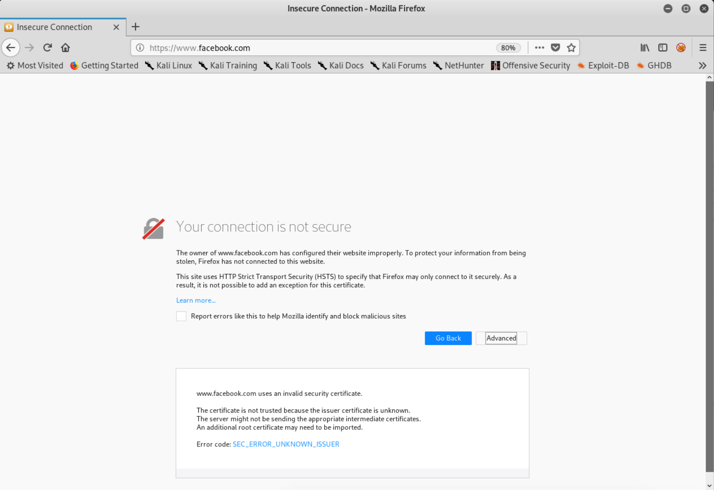
Safari displays
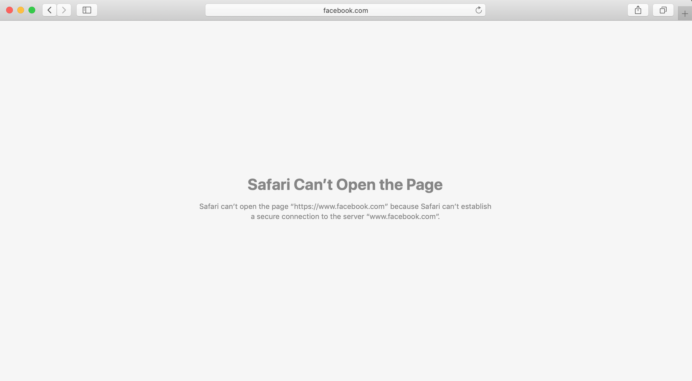
Chrome displays
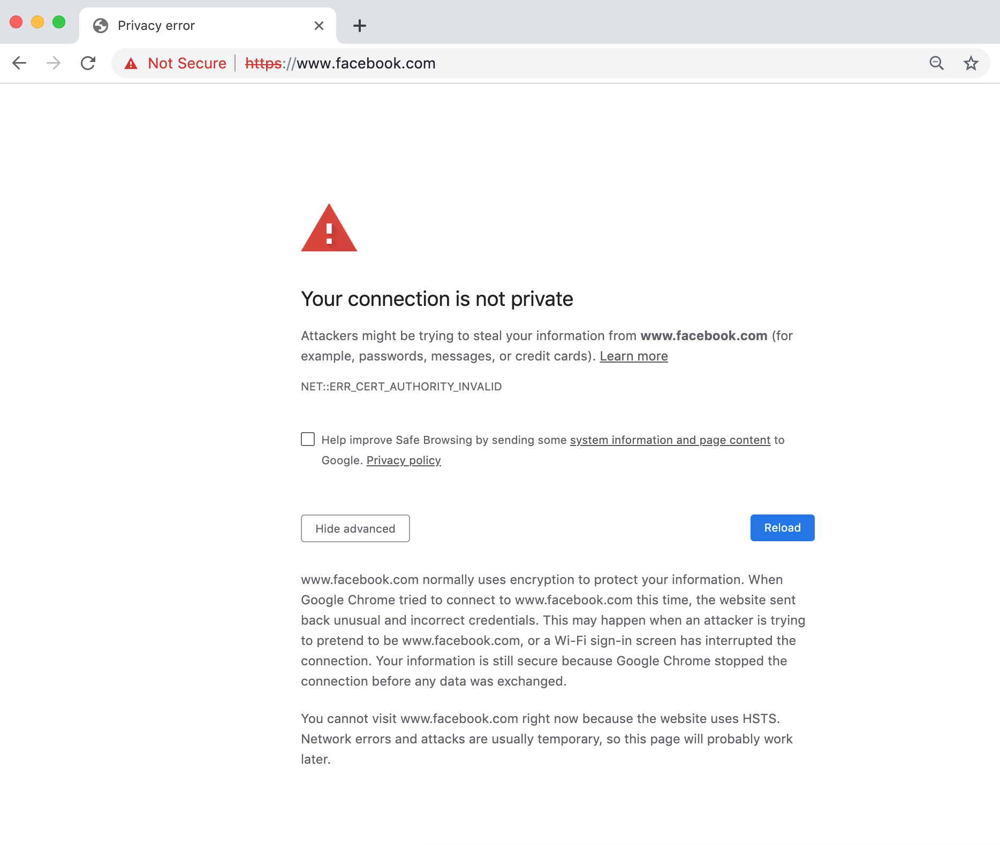
As we can see each browser shows a different warning (except Safari, it just refuses to load anything at the time of this writing) to the victims trying to connect to https://www.facebook.com. Obviously, this is not good as some, if not all, users would think WTF is this shit?! However, since https://www.facebook.com is in the pre-configured HSTS file we actually cannot even bypass the warning to visit the site. There's simply no way in visiting the website. Thanks to HSTS being enabled on https://www.facebook.com they've prevented attackers from intercepting any data on the network from a MITM attack.
Next, let's see what happens when we try to intercept a HTTPS website that
isn't in the HSTS pre-configured file
. The example we'll use is https://cnn.com. You'll see from the screenshots below what's displayed to the victims and if they're able to connect to https://cnn.com despite the warnings. For simplicity I've already clicked through the warnings on the "Advanced" tab as a victim would have to do the same in order to continue to the website. As you can see there's now an option that will allow users to click through and eventually onto the website since this site is not pre-configured in the HSTS file. Let's see what happens when a MITM attack is launched against a non-HSTS website:
FireFox displays:
Note the yellow banner and the "Accept the Risk and Continue" option. This victim would need to click through this in order to proceed to the website. Also note the "Error code" near the bottom as it actually has "MITM_DETECTED" in it.
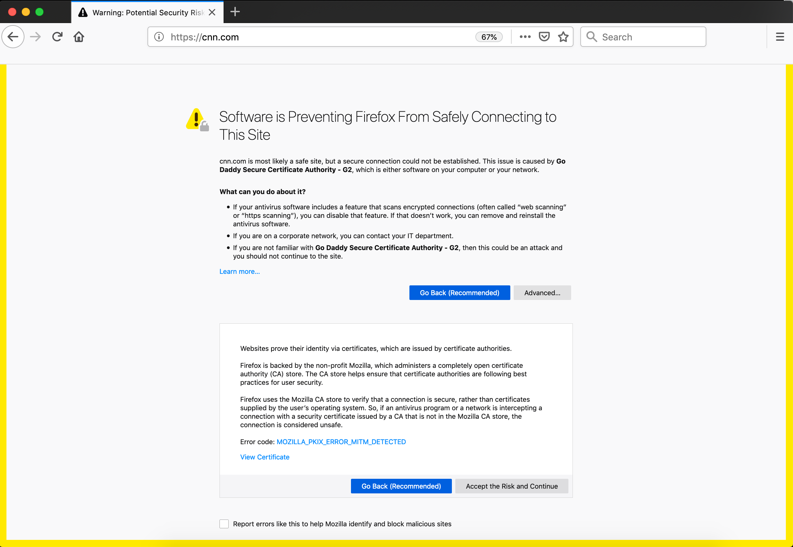
Safari displays
I clicked on "Show Details" and then clicked on "visit this website" to be displayed another prompt requesting user permission to make changes before visiting the website.
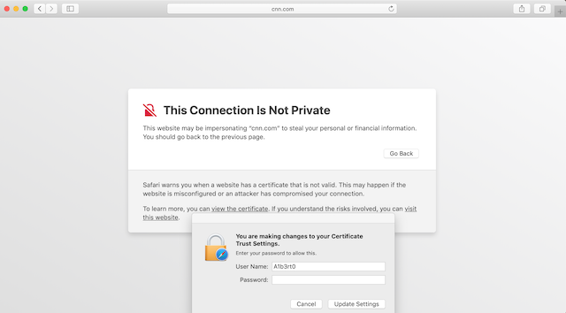
Chrome displays
Note the "Not Secure" with https crossed out in red and the "Proceed to cnn.com (unsafe)" option. This victim would need to click through this in order to proceed to the website.
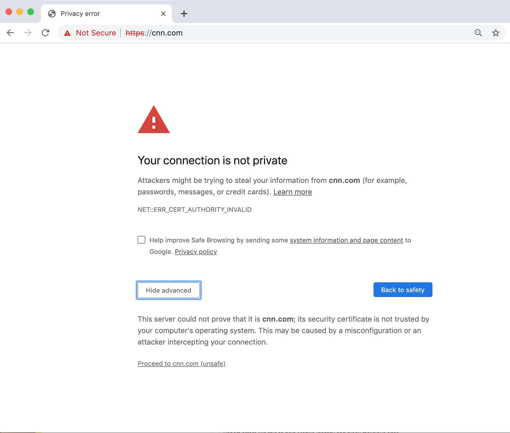
Internet Explorer displays
Note the warnings and "Continue to this website (not recommended)" option for the victim to click to proceed to the desired website.
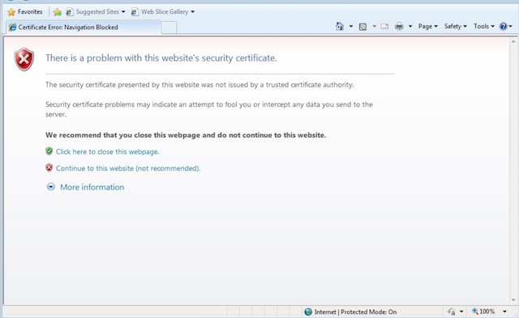
LOL
We now know that if the website has HSTS enabled and is in the HSTS pre-configured file in the web browser this will not allow users to visit that website when a MITM is occurring on the network, whereas if the website is
NOT
in the HSTS file then users will be displayed a warning, be able to click through the warnings, and continue onto the website. You would then be able to re-direct them to your phishing page, deliver malware, etc.
However, do you think "average" users will click through all those warnings and blindly continue on to the website they're trying to reach? Who knows the amount of people that will click on through blindly but some will. It's important not to assume everyone will fall for these type of attacks clicking through those warnings and re-entering their credentials. Just because you're launching these types of attacks doesn't mean they're going to be %100 successful because they won't be. There are a lot of variables at play when it comes to social engineering your targets properly.
The last very important point about HSTS enabled websites is if a user has already visited the HTTPS website before and the website is not in the HSTS file but has responded with the server response "Strict-Transport-Security: max-age=31536000
" and today you're launching your MITM attacks against them then you won't be successful. In order to intercept their HTTPS traffic from a MITM attack the user must be visiting the website for the first time ever (since the server has yet to reply with the Strict-Transport-Security response) and that website cannot be in the HSTS file in the browser.
"the user must be visiting the website for the first time ever"
. Think about that for a second...
You've somehow targeted someone on the network who is visiting a specific website for the first time ever and that website isn't in the HSTS file? They're entering their credentials for the first time ever while you're performing a MITM attack on the network at the same time? You think that's actually going to happen? Are you a fucking magicion? What is the chance of all those things falling into place for you hmm? Yeah that's not going to fucking happen mate. Those times are gone. I'm trying to keep it simple but we'll get into it more soon enough.
Story time! At one time I had a "real" job working as an IT security consultant and we were tasked with conducting MITM attacks against the employees of a medium sized organization to determine their "general" awareness and education surrounding MITM attacks. The goal of all of this was to see what was needed to aid the organization in developing their IT policies and acceptable use terms. We found that the majority of people who were presented with those web browser warnings clicked right on through them. This meant that out of the 144 employees targeted we had 92 employees click through the warnings and continue onto the website giving us the ability to obtain their credentials in plain text over the network (this was before HSTS I admit). Interestingly enough after it was all said and done we interviewed every employee that clicked through the browser warnings to try and determine why those employees clicked through the warnings in order to help develop a strategy to help mitigate that type of behavior within the organization. Our conclusion based on our conversations with the employees was since they were using a work computer and it wasn't their own computer/device they didn't overly care too much about the consequences and acted very differently than they would have if it was their own computer/device. People's behaviors in a workplace environment usually are they want to get on with their work day and if it means clicking through some web browser warnings so be it. Who doesn't have work IT problems amirite?
In other words, they didn't give a fuck because it wasn't their computer they were putting in jeopardy and no way in bloody hell would they have done that with their own computer/device. It's the companies computer who gives a fuck! Right?! Call Jimmy Jo the IT guy to fix your terminal, it's not your problem type of attitude. MITM attacks will not work all the time against every target you pursue. However, there's some things you can do to increase your chances of being successful which we'll discuss later on.
Now if you have someone like yourself that's on the network and all of a sudden your browser starts displaying those warnings to you then take a look around the coffee shop and look for that fuck face trying to steal your shit over the network. You can see how these warnings give away what you're trying to accomplish. They're literally telling the user that there's an attack being launched against them on the network.
Thankfully in today's internet age there are so many warnings and error messages with computers that the average user really has no idea what's real and what's not. Which ones are important and which ones are not? It helps that each browser displays the warning a little differently making it even more difficult for the average user to have any god damn clue of what is WAT.
Some people do click right the fuck through these warnings as they're bombarded with so many warnings these days they just don't care. Specially on work computers. I think we've all tried to fix a friend's computer once or twice in our life time yes? You check it out and it's totally riddled with malware and completely fucked. It's almost like they went out of their way to click on everything that popped up when they were browsing the internet. Not all, but some, will see those MITM warnings and click on by without thinking about it too much.
For example, in the screenshot below is a very common error displayed to people when they visit a website that wasn't properly configured or the website TLS/SSL certificate has expired. There's no MITM attack happening here but just a warning that the certificate has expired. This is more common than you think. As you can see, there can be "normal" errors that are pretty close to the MITM ones you've already seen in this chapter. The error below also gives the user the ability to click on "Advanced" to "Add Exception..." and continue onto the website. Some users might already be familiar with how to bypass these warnings and blindly continue on as per usual.
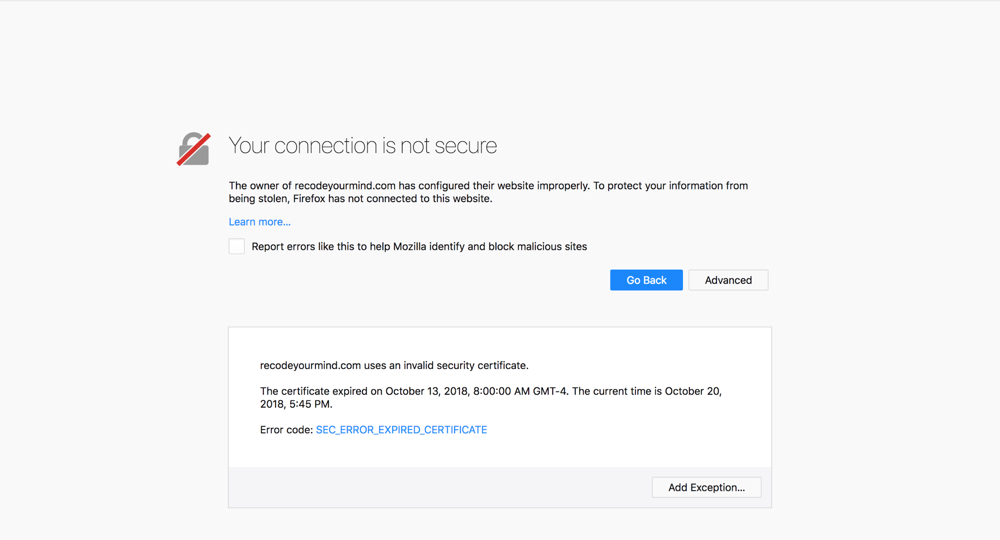
This is the current state of MITM attacks. You're years late to the party as HSTS was implemented yearssssss ago and prevents those types of MITM attacks. In today's age we now have defenses against these attacks built right in our web browsers with Certificate Authorities (CA) ensuring HTTPS is encrypted, validated, and functioning. Unless you've obtained the proper certificate for that specific website you're trying to target with MITM while on the network (are you a nation state/government actor?) you will always get those certificate warnings. For our level of attacks this is the reality we're in. Let that settle in because if you're reading this guide thinking you're going to be a master at siphoning FaceBook logins while at the coffee shop performing a MITM attack you're in fantasy land friend and too late at joining the party. Again, phishing over the internet, through emails, etc. is a whole guide on it's own so keep your eyes posted on my website for the release. Maybe Act IV or V we'll get into it eventually don't worry... If you're enjoying this course please send some funds to me to keep me motivated on creating them!
Things you've learned in this chapter:
The differences between HTTP and HTTPS.
What HSTS is and how it can hinder your MITM attack efforts.
The warnings that are presented to users when performing a MITM against a HTTPS website.
Performing a MITM attack against a HSTS website will not let users continue to the website.
Click to continue to Chapter 10